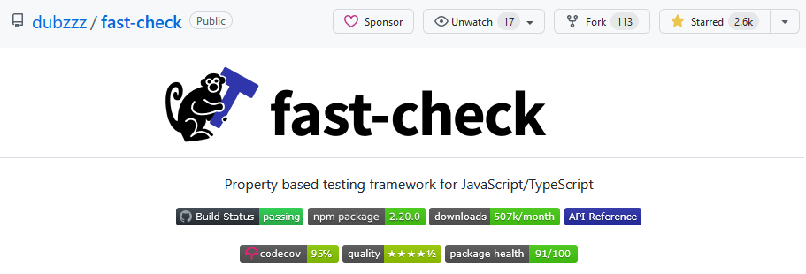

Another way to test
Let's generate tests
Nicolas DUBIEN


“You forgot about the case of the empty string”
“Is your algorithm working when input is like xxxx?”
“Why did you need this if in your code?”
😭
Writing good tests is hard
it('should consider itself as a substring', () => {
expect(isSubstring('a', 'a')).toBe(true);
});
it('should detect substring at the beginning', () => {
expect(isSubstring('abcd', 'ab')).toBe(true);
});
it('should detect substring at the end', () => {
expect(isSubstring('abcd', 'cd')).toBe(true);
});
it('should detect substring anywhere', () => {
expect(isSubstring('abcd', 'bc')).toBe(true);
});
it('should not detect when no match', () => {
expect(isSubstring('abcd', 'efgh')).toBe(false);
});
it('should not detect when not all letters match', () => {
expect(isSubstring('abcd', 'abce')).toBe(false);
});
it('should impact title on search', async () => {
await driver.get('https://www.google.com/ncr');
await driver.findElement(By.name('q'))
.sendKeys('webdriver', Key.RETURN);
await driver.wait(until.titleIs('webdriver - Google Search'), 1000);
});
Are we sure to cover everything?
Are we covering all the potential and plausible edge cases? 🤯
What if we could stop listing edge cases in our tests 😌

Nicolas DUBIEN
 ndubien
ndubien
Test structure
Hardcoded? 🤔
Limited scope of inputs covered
Going random...
But reproducible way
Not deterministic
Wait a minute... 😓
Random?
What if the reported error is:
".D0xjkFI{<:nx#U3lI~", "j>~&]&/'0Fw{?O"
[983 characters], [1302 characters]
fast-check to the rescue 🎯

Properties instead of isolated cases
for any (x, y, ...)
generate random inputs based on specified generators
such that precondition(x, y, ...) holds
check preconditions - failure? go back to previous
predicate(x, y, ...) is true
run the test - failure? shrink
🔁 Run it 100 times 🔁
Example
Let’s suppose we want to test “git diff”
test('should build a diff compatible with text2', () => {
test('should compute the right diff', () => {
// Arrange
const text1 = trim`
Angular
Vue
Vue
`;
const text2 = trim`
Angular
React
Vue
`;
// Act
const diff = computeDiff(text1, text2);
// Assert
expect(diff).toEqual(trim`
=== Angular
--- Vue
+++ React
=== Vue
`);
expect(extractText2FromDiff(diff)).toEqual(text2);
});
fc.assert(
fc.property(
fc.string(), fc.string(),
(text1, text2) => {
// Arrange / Act
const diff = computeDiff(text1, text2);
// Assert
expect(extractText2FromDiff(diff)).toEqual(text2);
}
)
);
});
for any (x, y, ...)
such that precondition(x, y, ...) holds
predicate(x, y, ...)
is true
for any text1, text2 strings
computeDiff(text1, text2) should be enough to build
back text2
for any text1, text2 strings
computeDiff(text1, text2) should be enough to build
back text2
{text1: ["漢🐱", "null", "ba"], text2: ["漢🐱", "ab"]} ✗
Shrinking into action
{text1: ["漢🐱", "null", "ba"], text2: ["漢🐱", "ab"]} ✗
{text1: [], text2: ["漢🐱", "ab"]} ✓
{text1: ["漢🐱", "null"], text2: ["漢🐱", "ab"]} ✓
{text1: ["ba"], text2: ["漢🐱", "ab"]} ✗
{text1: ["ba"], text2: []} ✓
{text1: ["ba"], text2: ["漢🐱"]} ✓
{text1: ["ba"], text2: ["ab"]} ✗
...
Back to our property…
for any text1, text2 strings
computeDiff(text1, text2) should be enough to build
back text2
Are we missing something? 🤨
function computeDiff(text1, text2) {
return [
...text1
.split('\n')
.map(line => `--- ${line}`),
...text2
.split('\n')
.map(line => `+++ ${line}`),
]
}
inputs:
text1: text2:
Angular Angular
Vue React
Vue Vue
output:
--- Angular
--- Vue
--- Vue
+++ Angular
+++ React
+++ Vue
Pass the tests
Not really useful diff
Let's go further
inputs:
text1: text2:
Angular Angular
Vue React
Vue Vue
output:
=== Angular
--- Vue
+++ React
=== Vue
=== Angular === Angular
--- Vue +++ React
+++ React --- Vue
=== Vue === Vue
Vue Vue
=== Angular === Angular === Angular
--- Vue +++ React +++ React
+++ React --- Vue === Vue
=== Vue === Vue --- Vue
test('should compute the shortest diff', () => {
fc.assert(
fc.property(
/* TODO: diff generator */,
fc.array(
fc.record({
type: fc.constantFrom('===', '+++', '---'),
line: fc.string(),
})
)
.map(es => es.map(e => `${e.type} ${e.line}`).join('\n')),
(candidateDiff) => {
// Arrange
const candidateDiff = trim`
=== Angular
--- Vue
+++ React
=== Vue
`;
const text1 = extractText1FromDiff(candidateDiff);
const text2 = extractText2FromDiff(candidateDiff);
// Act
const diff = computeDiff(text1, text2);
// Assert
expect(diff.split('\n').length)
.toBeLessThanOrEqual(candidateDiff.split('\n').length)
}
)
)
});
Property based:
Large subset of all the possible inputs,
Limited coverage of the output
Example based:
Limited subset of all the possible inputs,
Accurate coverage of the output
Is it applicable?
Found bugs in: Jest, Jasmine, React, js-yaml,
query-string, underscore.js…
Going further?

Cover the whole scope from unit to e2e
Document invariants of your algorithms
Not a replacement for example-based, another tool
Questions?
ndubien
 fast-check
fast-check